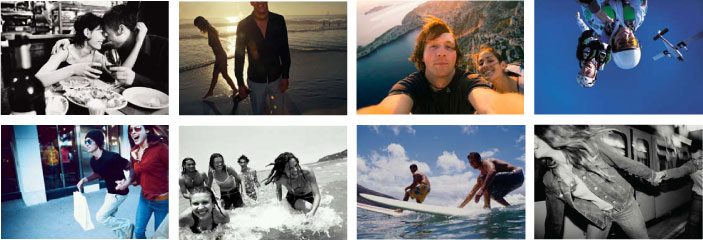
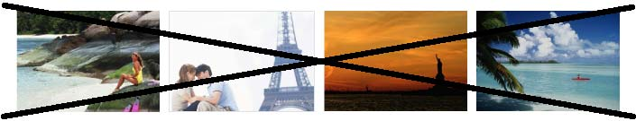

Art direction / imagery
Spirit
Imagery used to represent the lastminute.com brand must feel energetic, fun, alive and candid. The position of the camera and the cropping of the final image give the viewer the sense of being inside or at the heart of the image. This also means that lastminute.com imagery gets the viewer closer to the subject and therefore the experience.
lastminute.com imagery always strives to make the viewer feel like they are there. All the images shown in this section are examples used to demonstrate lastminute.com image usage principles and must not be used outside of this document for any lastminute.com marketing material.
Illustration
Where possible photographic imagery should be used ahead of illustration. Photography allows the consumer to get closer to the experience and ultimately the brand. If no suitable photographic image can be created or sourced then a type/message only solution should also be considered.
Composition and cropping
Strong angles and cropping give the imagery a sense of movement and dynamism. This effect can be amplified by rotating the image within the frame during cropping.

Images displaying subject matter at a long distance should not be used. They lack energy and it is difficult for the viewer to engage with the content. Likewise, clichéd scenic photography of unpopulated landscapes and people should be avoided.

lastminute.com imagery can be found on the network. View lastminute.com image library. We have European usage licenses on all these images. The images should not be used on third party websites or marketing material. We do not have licences for the images used in the style guide so please do not use them.
Please note that the number of images we have to use on our sites should increase significantly once the Global Digital Asset Management System is in place, ideally in 2009.